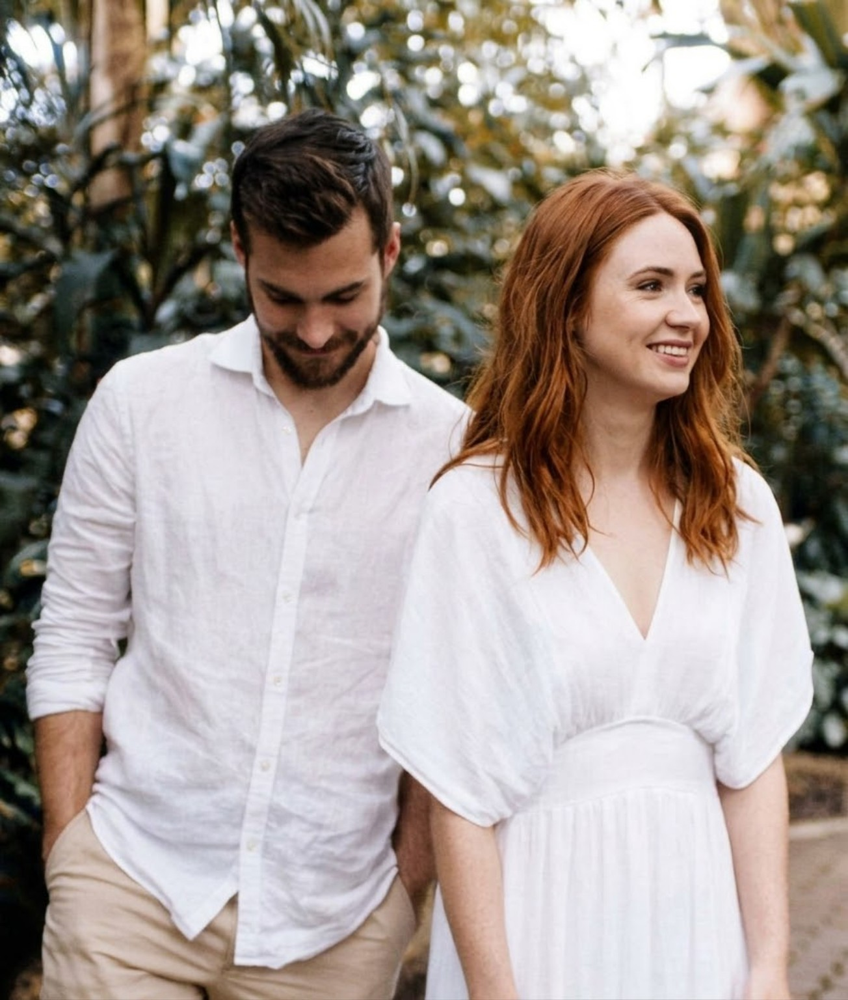
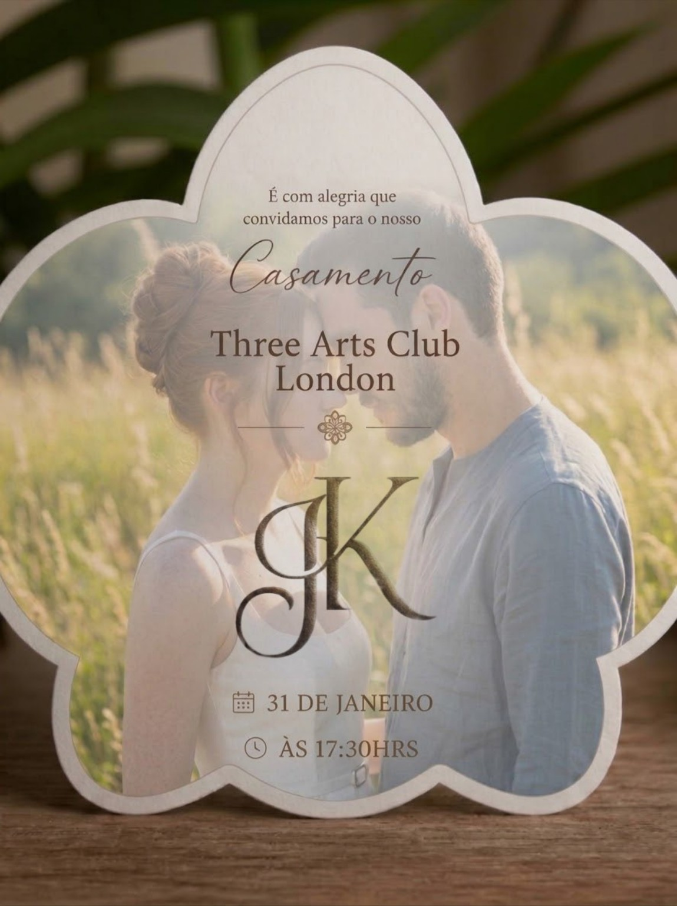
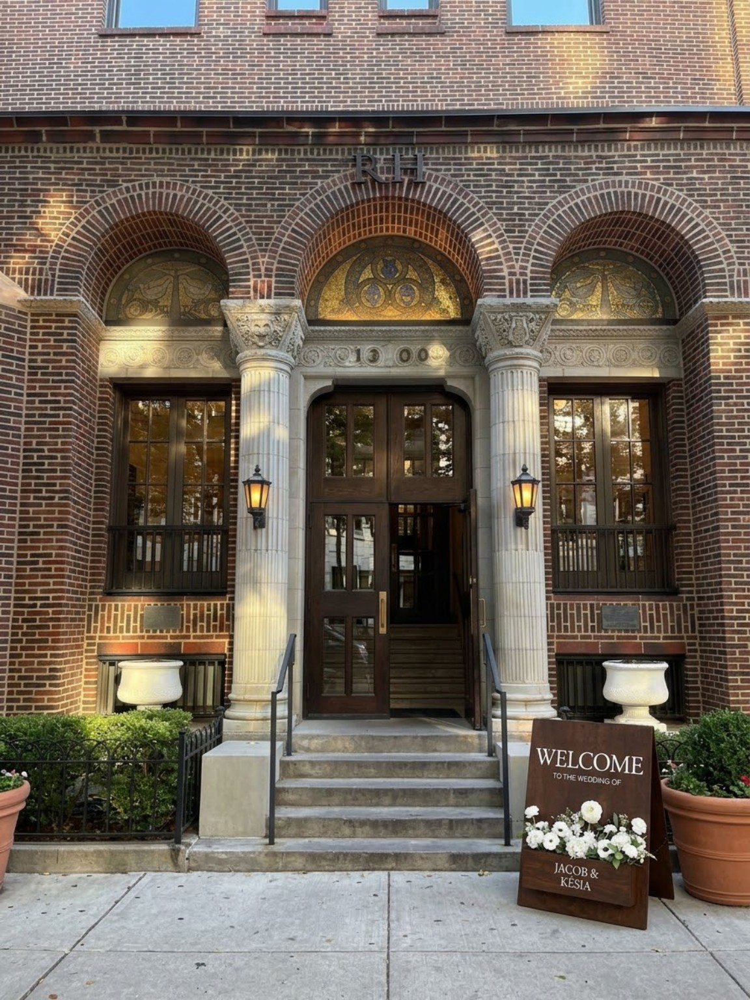

✧
When
Domingo
31 de janeiro de 2027
17h30
17:30 · London, United Kingdom
Discover our celebration ↓Some stories begin long before their authors understand where they will lead.

Um amor que nasceu ainda na infância, cresceu entre brincadeiras e estudos, e resistiu a distâncias, desencontros e anos de silêncio.
Mais de uma década depois, maduro e certo de si, esse sentimento finalmente encontrou seu lugar.
No dia 31 de janeiro, Jacob e Késia celebram o capítulo que escolheram escrever juntos — cercados pelas pessoas que fazem parte dessa história.
Será uma alegria compartilhar este dia com pessoas tão especiais.
Domingo
31 de janeiro de 2027
17h30
Three Arts Club
London, United Kingdom
Uma noite para celebrar
o amor, a família
e novos começos.
O convite que anuncia o início de uma nova etapa.

A paleta do nosso casamento reúne verde sálvia, rosa claro e marrom, acompanhados por tons neutros e detalhes suaves. Elegância e personalidade para uma noite especial.

31 de janeiro de 2027
Às 17h30
Esperamos você para celebrar conosco.
Abrir localizaçãoPequenos instantes de uma história inteira.
Sua presença tornará esse momento ainda mais especial.
Em breve, você poderá confirmar sua presença diretamente por esta página.